Pierre Romera Qui suis-je ?
Directeur Général et co-fondateur de Journalism++
Journalism++ est une agence de Journalisme de données.
Enseignant à l'École de Journalisme de Science Po
J'initie les journalistes au développement web et à l'utilisation de formats innovants.
Formateur et conférencier (ESJ Lille, CFJ Paris, World Bank Institue, etc)
J'interviens pour parler de Journalisme de données et de la collaboration entre journalistes et développeurs.
Développeur Freelance
Python, Django, Node.js, Angular, D3, HTML5, Data Visualisation, ...
Directeur Général Délégué chez OWNI/22mars
OWNI était un media en ligne, pionnier français du Data Journalism.
Pierre Romera Mes travaux
- 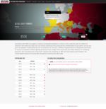 RSF : Index de la liberté de la presse
- 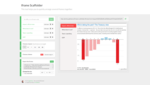 Iframe Scaffolder
- 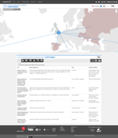 Global Witness : The Great Rip off
- AFDAS: carte de presse en 2015
- 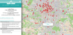 Île de France: les CFA de votre région
- 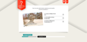 Île de France: Le Grand Quiz
- 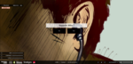 France Télévision: Jeu d'Influences
- 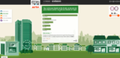 Arte: World of Work
- 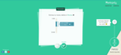 France Télévision: Municipaly
- 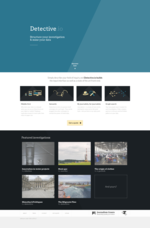 Detective.io
- Conférence: When Journalism meets Open Source culture
- 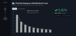 Benford's Law Calculator
- Hackaton: Broken Promises
- 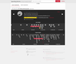 OKF: Spending Stories
- 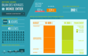 Fondation BNPP: Odyssée Jeunes
- 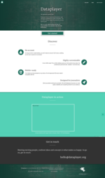 Dataplayer
- 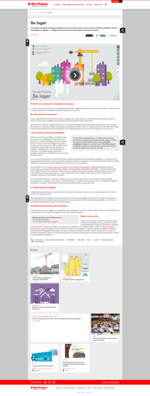 Île de France: apps intéractives
- 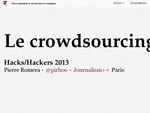 Conférence: Le crowdsourcing
 Arte: Une contre-histoire des Internets
Arte: Une contre-histoire des Internets- 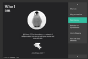 Conférence: Kathmandu Open Data Bootcamp
- 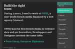 Conférence: Work with Data effectively
- Conférence: Data & Newsgame
- 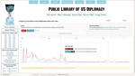 Wikileaks: Kissinger Cables
- 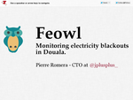 Conférence: Feowl, Monitoring electricity blackouts in Douala.
- L’Express: Des données pour l’autisme
- 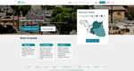 Feowl: blackouts à Douala
- 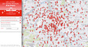 Île de France: les lycées de votre région
- 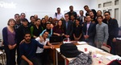 Digital Journalism Bootcamp: How to tell stories with data
- 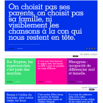 Aucun Lien
- Hacks/Hackers: Data-journalism « à la française »
- 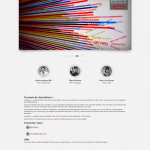 Journalism++: we build data-first newsrooms
- 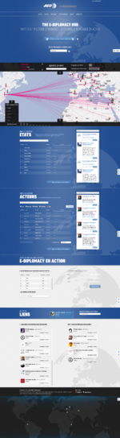 AFP: The e-diplomacy hub
- 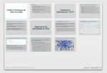 Conférence: Outils et techniques du Data-Journalist
- Rue89: Alerte Politique !
- 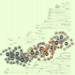 Conférence: Quelles perspectives pour l’opendata et les journalistes ?
- Intervention à Hack The Press: ma présentation interactive est en ligne !
- Data-Journalism: théorie et pratique
- 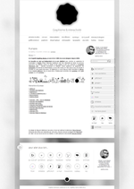 Geoffrey Dorne: Graphisme & interactivité
- 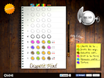 FIDH: Despotic Mind
- 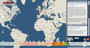 RFI: les lois antiterroristes dans le monde
- 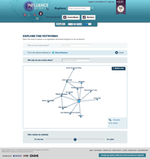 Influence Networks: cartographie des réseaux d’influence
- 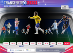 Eurosport: Transferts 2011
- 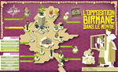 UPIAN & 5ème étage Prod: Opposition Birmane
- Radio Nova: Nuit Sujet #2
- 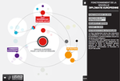 Presseurop: Fonctionnement de la nouvelle Diplomatie Europeenne
- France Inter: Serge Gainsbourg, aux Graph Et Cætera…
- 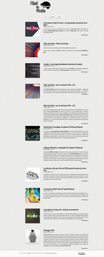 L’Oeil Du Pirate
- 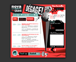 Radio Nova: Nuit Sujet #1
- 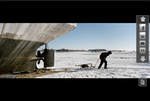 Galerie Interactive, Argos et l’eau
- 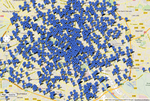 OWNI: A Paris, la police aura des yeux tout partout
- 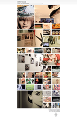 Iconomani: Vern1ssage
- 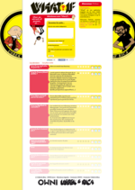 Ubsek et Rica: What if?
- 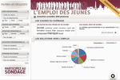 IFOP: l’emploi des jeunes
- 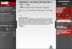 Wikileaks: Warlogs Irakiens
- La pilule de quel lendemain ?
- 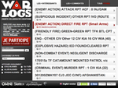 Wikileaks: Warlogs Afghans
- 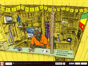 RFI: Les objets symboles des indépendances africaines
- 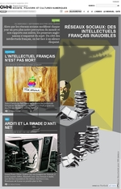 OWNI v2
- 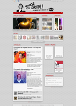 Branche ton Sontone, le webzine qui t’aide à pécho en te donnant une super culture musicale